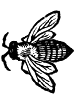
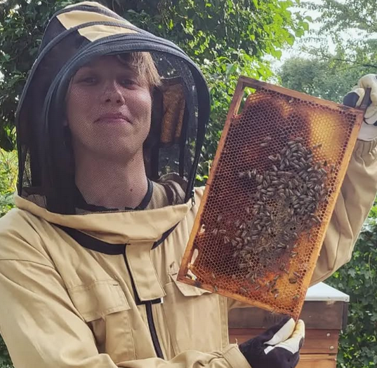

David Slot behaalde in 2024 zijn masterdiploma in Literatuurwetenschap aan de Universiteit van Amsterdam, met als specialisatie jaren 80 feministische science fiction en hoe die nadenkt over landbouw en dieren. Hij is een fervent imker en heeft twee bijenkasten op een volkstuin in het Nieuwe Bijenpark in Amsterdam, waar hij zijn zomers zwetend in een imkerpak doorbrengt. Bijenteksten zijn deel van een breder onderzoeksproject naar wat mensen en bijen voor elkaar kunnen betekenen. Op dit moment werkt David aan de vraag hoe dierlijke fictie ons kan helpen wonen te begrijpen als een soortoverstijgend proces.
Heb jij een bijentekst die je wil toevoegen aan het digitale archief? Neem contact op via textsbybees@gmail.com.
